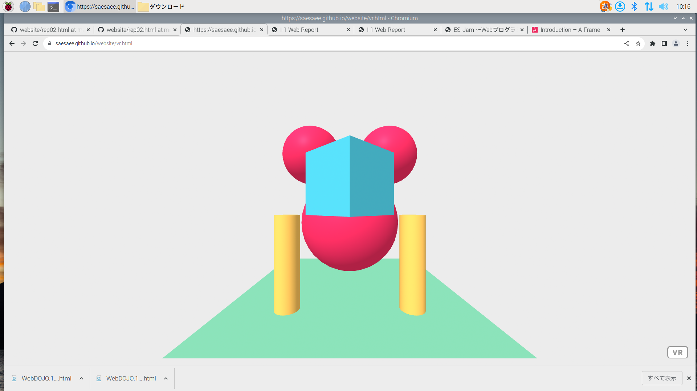

2-3 JavaScript体験：３次元モデルのプログラムを作る

３次元モデル
1.内容
A-Frameのプログラムを用い、JavaScriptを使って3次元モデルのプログラムを作成した。
positionは位置、rotationは角度、colorは色、radiusは半径を表している。
そのため、それぞれの数字を変えると位置や色が変わり、自分の3次元モデルが作れる。
2.感想
数字を少し変えるだけで、また違った３次元モデルを作ることができました。
VRで作っているので実際にどうなっているのか空間把握能力が必要だと思いました。
コンピュータでの設計やCADでの設計もこんな感じの３次元モデルなのかなと思いました。
球、円柱、立方体とシンプルな形からのスタートだったけど、プログラムを変えるといろいろな形を作ることができて、楽しかったです。